This analysis is a simple visualisation and tabulation of the data gathered from surveying 21 journals and 200 articles in the field of plant pathology for their openness and reproducibility.
Setup Workspace
Setup workspace by loading libraries used and setting the ggplot2 theme for the document.
library(dplyr)
#>
#> Attaching package: 'dplyr'
#> The following objects are masked from 'package:stats':
#>
#> filter, lag
#> The following objects are masked from 'package:base':
#>
#> intersect, setdiff, setequal, union
library(ggplot2)
library(hrbrthemes)
library(janitor)
#>
#> Attaching package: 'janitor'
#> The following objects are masked from 'package:stats':
#>
#> chisq.test, fisher.test
library(magrittr)
library(pander)
library(Reproducibility.in.Plant.Pathology)
library(tidyr)
#>
#> Attaching package: 'tidyr'
#> The following object is masked from 'package:magrittr':
#>
#> extract
theme_set(theme_ipsum_rc())Import article evaluations
rrpp <- gsheet::gsheet2tbl(
"https://docs.google.com/spreadsheets/d/19gXobV4oPZeWZiQJAPNIrmqpfGQtpapXWcSxaXRw1-M/edit#gid=1699540381"
)Prepare the data
Calculate the reproducibility score, dropping any rows (in this case two) that have NA for the full score and convert fields to factors and the tibble to a data.frame.
rrpp <-
rrpp %>%
mutate(
reproducibility_score =
if_else(
condition = data_avail > 0,
true = as.integer(comp_mthds_avail) +
as.integer(software_avail) +
as.integer(software_cite) +
as.integer(data_avail),
false = as.integer(data_avail),
missing = as.integer(0)
)
) %>%
mutate(IF_5year =
if_else(
condition = is.na(IF_5year),
true = 0,
false = IF_5year
)) %>%
mutate(art_class = as.factor(art_class)) %>%
mutate(repro_inst = as.factor(repro_inst)) %>%
mutate(open = as.factor(open)) %>%
mutate(abbreviation = as.factor(abbreviation)) %>%
mutate(assignee = as.factor(assignee)) %>%
filter(!is.na(reproducibility_score)) %>%
as.data.frame()Create a tidy data frame of the data by unnesting software used as in many cases multiple software packages were used, so will end up with multiple rows for same article, one for each software.
Visualise evaluations
Article classes
What class did the articles fall into, "Applied,
ggplot(rrpp, aes(x = art_class)) +
geom_bar(stat = "count") +
xlab("Class(es)") +
ggtitle("Article Classification") +
coord_flip()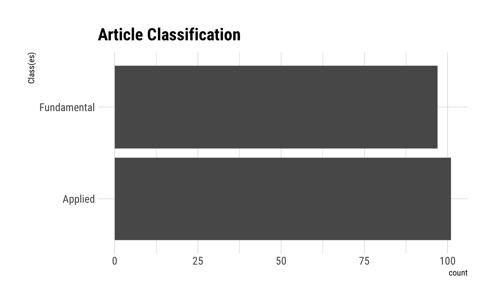
Computational methods available
Were the computational methods, scripts, source code, etc. made available?
ggplot(rrpp, aes(x = comp_mthds_avail)) +
geom_bar() +
ggtitle("Computational Methods Availability") +
xlab("Score") +
coord_flip()
#> Warning: Removed 4 rows containing non-finite values (stat_count).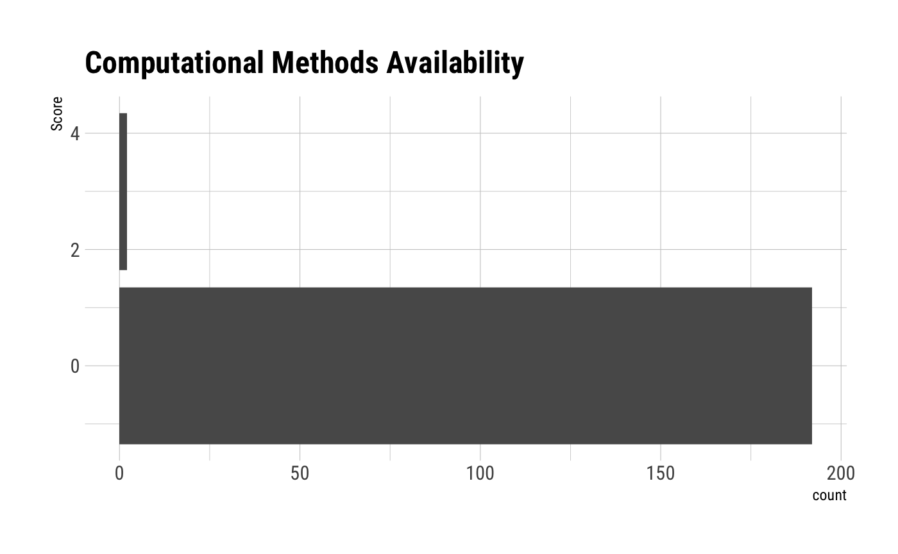
Software availability
Were the software used readily available and preferably open-source?
ggplot(rrpp, aes(x = software_avail)) +
geom_bar() +
ggtitle("Software Availability") +
xlab("Score") +
coord_flip()
#> Warning: Removed 1 rows containing non-finite values (stat_count).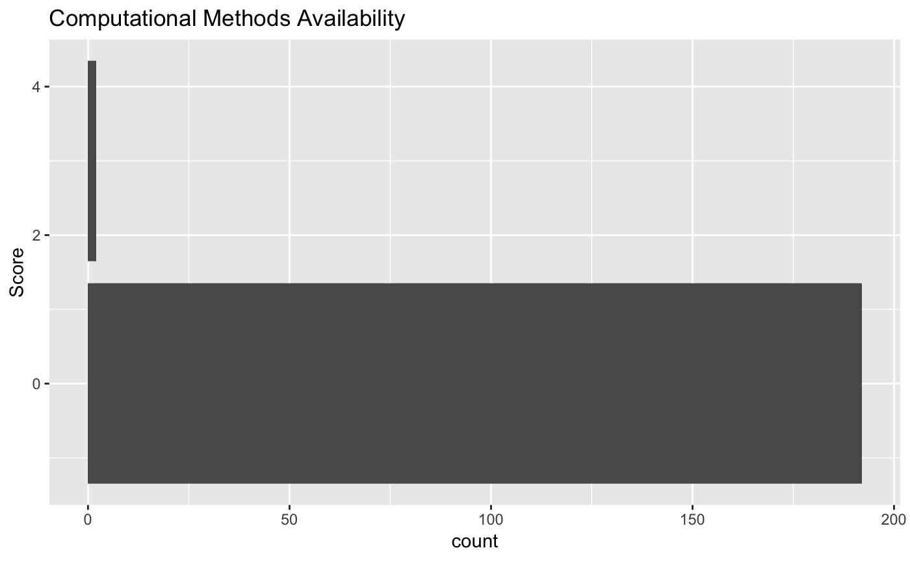
Data availability
Were the data made available?
ggplot(rrpp, aes(x = data_avail)) +
geom_bar() +
ggtitle("Data Availability") +
xlab("Score") +
coord_flip()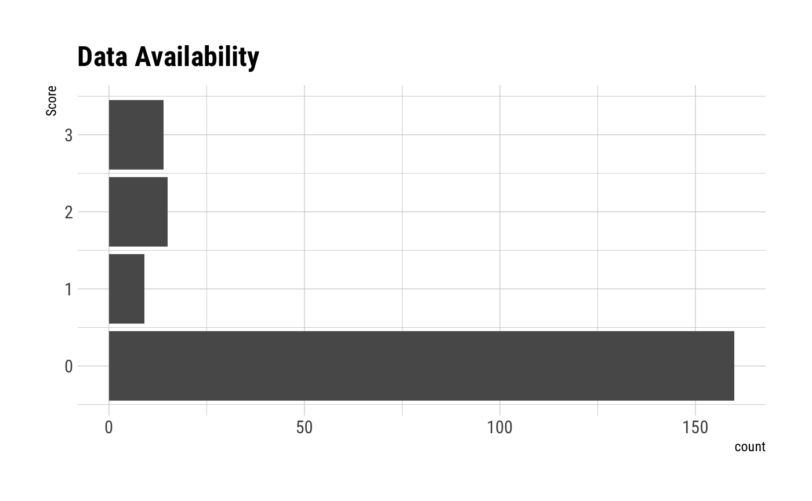
Software citations
Were the software that was used properly cited?
ggplot(rrpp, aes(x = software_cite)) +
geom_bar() +
ggtitle("Software Cited") +
xlab("Score") +
coord_flip()
#> Warning: Removed 1 rows containing non-finite values (stat_count).
Software used (cited)
Count and sort top 10 software packages cited. There are likely others that are used, but they have not been properly identified by the authors.
tab <- table(rrpp_software$software_used)
tab_s <- sort(tab)
top10 <- tail(names(tab_s), 17) # checking the table, there are several ties
top_software <- subset(rrpp_software, software_used %in% top10)
top_software$software_used <- factor(top_software$software_used,
levels = rev(top10))
ggplot(top_software, aes(x = software_used)) +
geom_bar() +
ggtitle("Top 10 Software Used") +
xlab("Software") +
ylab("Count") +
coord_flip()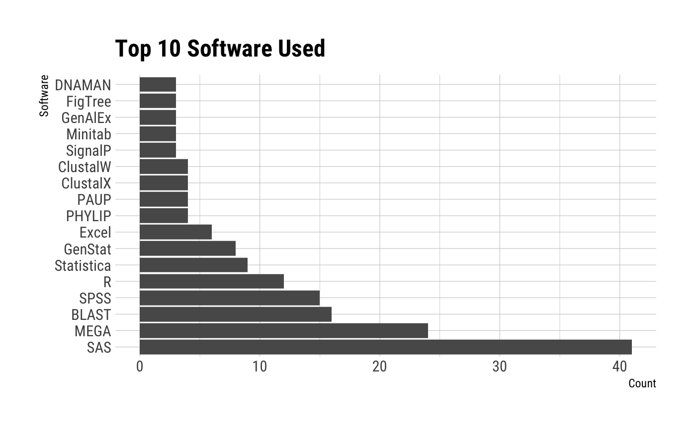
Reproducibility score
The reproducibility score was calculated as the sum of the scores for computational method availability,
ggplot(rrpp, aes(x = reproducibility_score)) +
geom_bar() +
ggtitle("Combined Reproducibility Score") +
xlab("Score") +
coord_flip()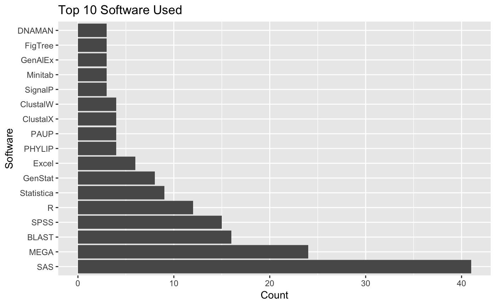
Article class effect on reproducibility score
ggplot(rrpp, aes(y = reproducibility_score,
x = art_class)) +
geom_boxplot(outlier.shape = NA) +
geom_jitter(width = 0.25, alpha = 0.5) +
ggtitle("Article Class Effect") +
xlab("Class(es)") +
ylab("Score") +
coord_flip()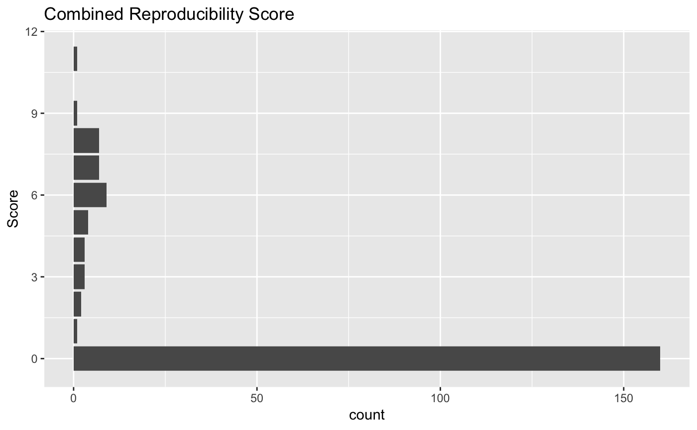
Journal effect on reproducibility score
ggplot(rrpp, aes(y = reproducibility_score,
x = abbreviation)) +
geom_count() +
ggtitle("Journal Effect") +
xlab("Journal") +
ylab("Score") +
coord_flip()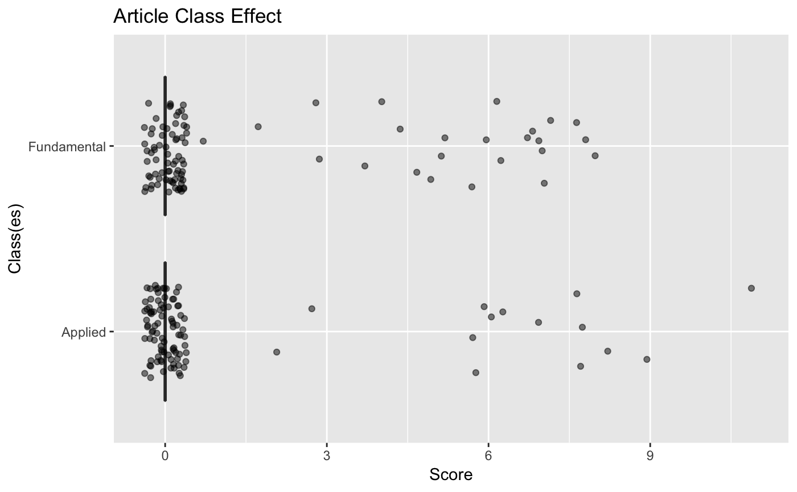
Evaluator effect on reproducibility score
ggplot(rrpp, aes(y = reproducibility_score,
x = assignee)) +
geom_count() +
ggtitle("Evaluator Effect") +
xlab("Evaluator") +
ylab("Score") +
coord_flip()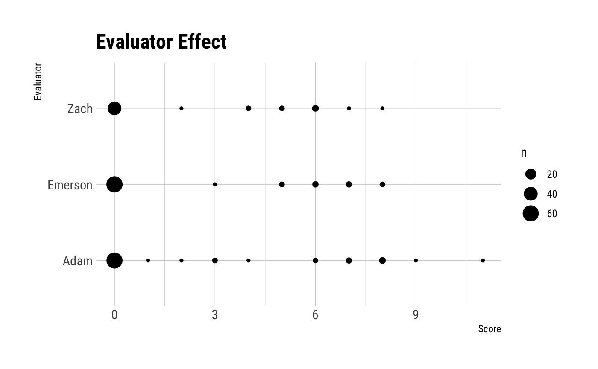
Five year impact factor effect on reproducibility score
ggplot(rrpp, aes(y = reproducibility_score,
x = IF_5year)) +
geom_count() +
ggtitle("Five Year IF Effect") +
xlab("Impact Factor") +
ylab("Score") +
coord_flip()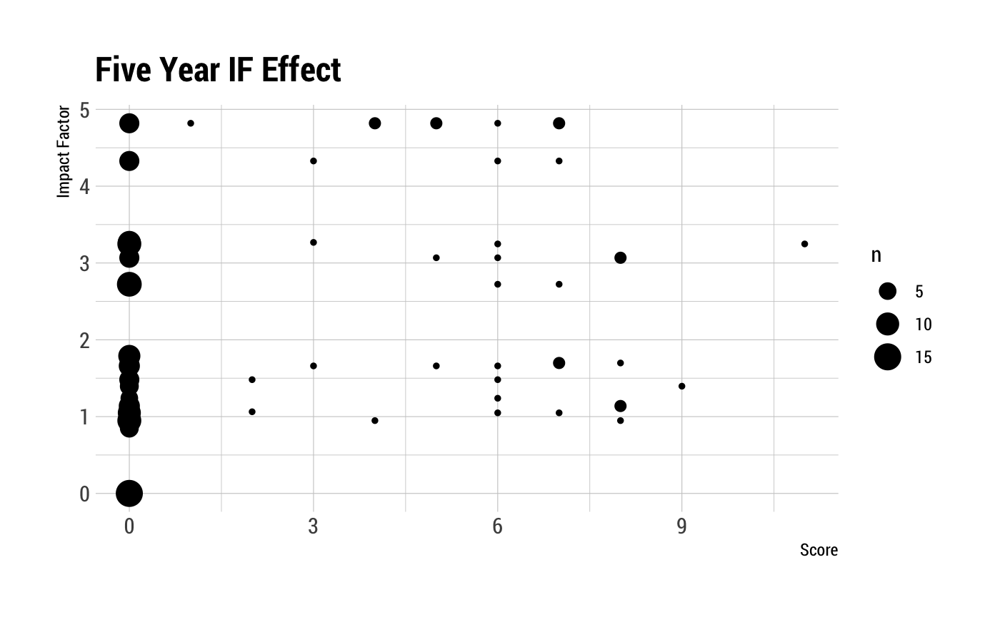
Journal open access effect on reproducibility score
ggplot(rrpp, aes(y = reproducibility_score,
x = open)) +
geom_count() +
ggtitle("Open Access Effect") +
xlab("Open Access Classification") +
ylab("Score") +
coord_flip()
Journal reproducibility instructions effect on reproducibility score
ggplot(rrpp, aes(y = reproducibility_score,
x = as.factor(repro_inst))) +
geom_boxplot(outlier.shape = NA) +
geom_jitter(width = 0.25, alpha = 0.5) +
ggtitle("Reproducibility Instructions Effect") +
xlab("Reproducibility Instructions Score") +
ylab("Score") +
coord_flip()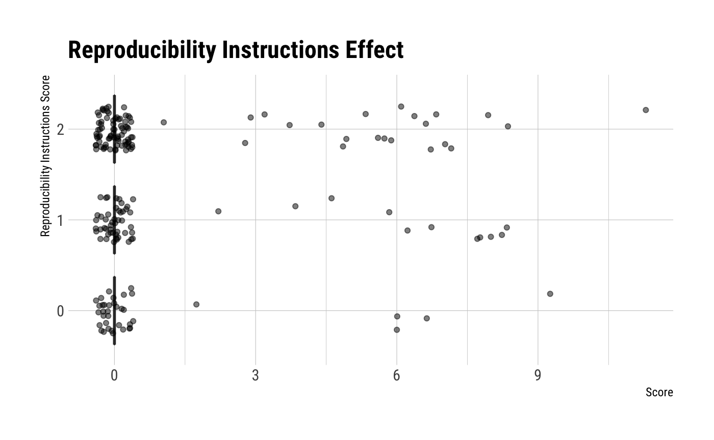
Tables
Table of Journals Surveyed
rrpp_journals <- tabyl(rrpp, journal)[, -3]
names(rrpp_journals) <- c("Journal", "n")
pander(rrpp_journals)| Journal | n |
|---|---|
| Australasian Plant Pathology | 4 |
| Canadian Journal of Plant Pathology | 6 |
| Crop Protection | 9 |
| European Journal of Plant Pathology | 8 |
| Forest Pathology | 9 |
| Journal of General Plant Pathology | 12 |
| Journal of Phytopathology | 7 |
| Journal of Plant Pathology | 10 |
| Molecular Plant Pathology | 15 |
| Molecular Plant-Microbe Interactions | 10 |
| Nematology | 7 |
| Physiological and Molecular Plant Pathology | 11 |
| Phytoparasitica | 13 |
| Phytopathologia Mediterranea | 7 |
| Phytopathology | 13 |
| Plant Disease | 12 |
| Plant Health Progress | 6 |
| Plant Pathology | 14 |
| Revista Mexicana de Fitopatología | 8 |
| Tropical Plant Pathology | 6 |
| Virology Journal (Plant Viruses Section) | 11 |
Table of Article Scores
article_scores <- tabyl(rrpp, reproducibility_score)
names(article_scores) <- c("Score", "n", "Percent")
article_scores$Percent <- round(article_scores$Percent * 100, 1)
pander(article_scores)| Score | n | Percent |
|---|---|---|
| 0 | 160 | 80.8 |
| 1 | 1 | 0.5 |
| 2 | 2 | 1 |
| 3 | 3 | 1.5 |
| 4 | 3 | 1.5 |
| 5 | 4 | 2 |
| 6 | 9 | 4.5 |
| 7 | 7 | 3.5 |
| 8 | 7 | 3.5 |
| 9 | 1 | 0.5 |
| 11 | 1 | 0.5 |